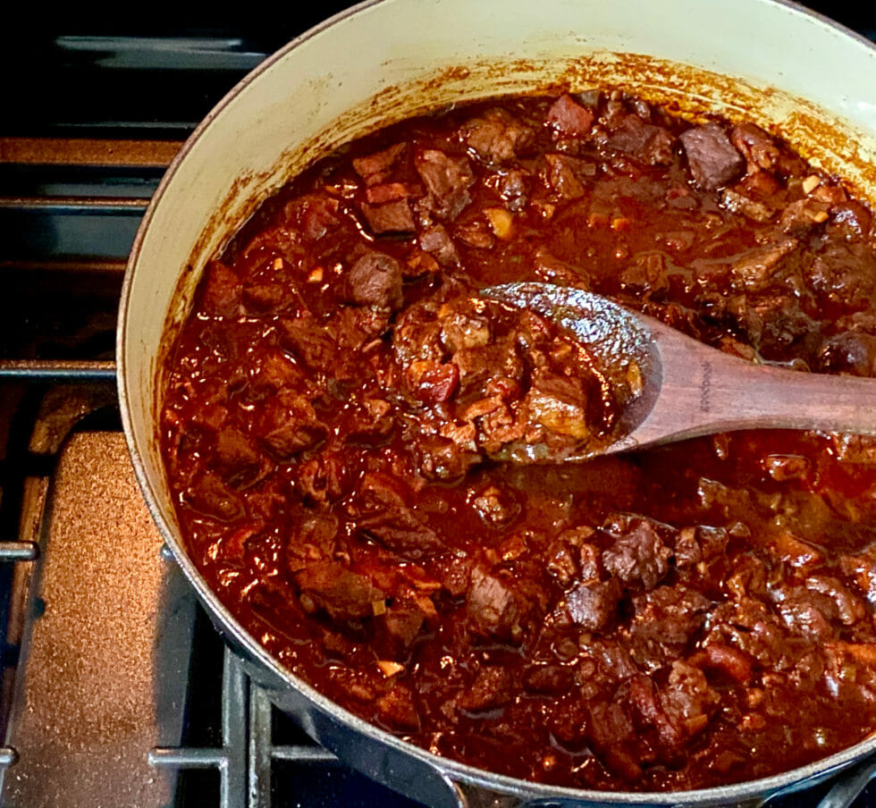

My very own Texas chili

Description
My version of Texas chili, of course without a single bean in it. I learned this simple recipe on my days as a graduate student in Houston, TX. I found a now forgotten recipe and adapted to my skills and flavor profile.
Ingredients
- Ground beef
- Carrots
- Celery
- Water or beef broth
- Dark beer
- Garlic
- Onions
- Olive oil
- Cumin
- Black pepper
- Jalapeno chilis
Steps
- Peel and chop the carrots and onions. Peel and crush the garlic cloves. Chop the celery. Set aside.
- Brown the ground beef in batches. You are looking for a serious brown, but not burn or black color in your beef. Set aside.
- Add some oil to a large, deep pan. Use medium fire. Add the chopped carrots first. Let them fry for some time, then add the chopped onions. Wait until the onions are transparent before adding the garlic. Let the garlic turn aromatic, and then add the chopped celery.
- Once the celery is bright green, add some pepper, salt, and the cumin. Cumin gives the magic touch to this chili, but you do not want to be overpowering, so add it slowly and test the smell of the mixture.
- Add the browned ground beef and mix with the fried vegetables. You want them to become intertwined, so you will spend some time and add some elbow grease at this point
- Once you have a somewhat uniform mix, add the jalapenos and the dark beer. Mix well again. The beer will be quickly absorbed by the mixture, so you can add either water, beef broth, or more beer if you like it.
- At this point you need to achieve the proper cooking level. You want to see some bubbling at the surface of the chili and then turn the fire to low.
- Wait for half an hour, while the chili simmers. Put a lid on it and keep closed as much as possible. Try the chili at the start of this stage, and at 15 minutes intervals. Add either salt, pepper, or cumin according to your taste.
- Serve it hot and enjoy with some american cheese on top and bread.